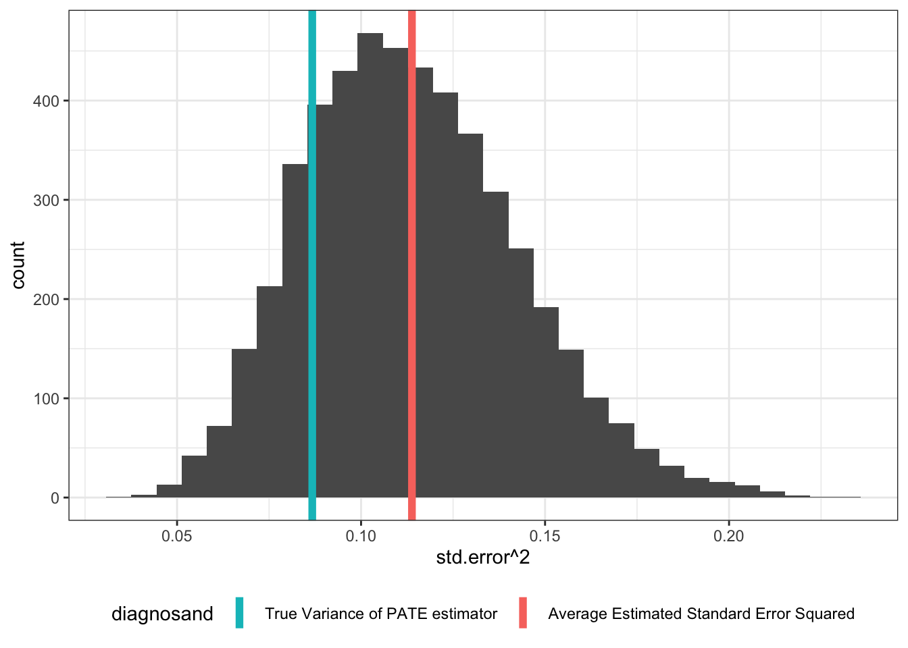

r <- 0 # correlation between Y0 and Y1
b <- 0 # average treatment effect
design <-
declare_model(N = 64,
u_0 = rnorm(N),
u_1 = rnorm(n = N, mean = r * u_0, sd = sqrt(1 - r^2)),
Y_Z_0 = u_0,
Y_Z_1 = u_1 + b) +
declare_sampling(S = complete_rs(N, n = 32)) +
declare_assignment(Z = complete_ra(N)) +
declare_measurement(Y = reveal_outcomes(Y ~ Z)) +
declare_estimator(Y ~ Z)Random assignment provides a justification not just for estimates of effects but also for estimates of uncertainty about effects. The basic approach, due to Neyman, is to estimate the variance in estimates of the difference between outcomes in treatment and in control outcomes using the variability that can be observed among units in control and units in treatment. It’s an ingenious approach and dispenses with the need to make any assumptions about the shape of statistical distributions or about asymptotics. The problem though is that it can sometimes be upwardly biased, meaning that it might lead you to maintain null hypotheses when you should be rejecting them. We use design diagnosis to get a handle on how great this problem is and how it matters for different estimands.
The key insight is that how great a problem this is depends on the target of inference. If you are targeting a sample average treatment effect (SATE), your standard errors will often be too big. If you are targeting a population average treatment effect (PATE), but that population is itself sampled from a superpopulation, your standard errors may also be too big, though the issues are less severe. If you’re targeting a superpopulation average treatment effect (SPATE), your standard errors will be the right size.
A quick word on what we’re not talking about. Under complete random assignment (exactly \(m\) of \(N\) units in the sample are treated), the difference-in-means estimator of the average treatment effect is of course unbiased, which means that it returns exactly the right answer, on average. The bias we are talking about here isn’t in the estimator of the treatment effect, but instead, it’s in the standard error estimator.
We want to estimate \(\text{sd}\left(\frac{1}{n_T}\sum_{i \in T} Y_i(1) - \frac{1}{n_C}\sum_{i \in C} Y_i(0) \right)\). The usual estimator for this is the Neyman standard error. This estimator uses the fact that the variance of a difference (treatment - control) can be expressed in terms of the variance of each group (variance of treatment outcomes, variance of control outcomes), and the covariance between them (see Freedman). We can estimate the variances easily enough but unfortunately we cannot estimate the covariance because we never simultaneously see outcomes for treatment and control for a given unit. Instead the Neyman estimator assumes the worst and estimates an upper bound on the variance. This is equivalent to HC2 robust standard errors in a regression setup and it is what is estimated by default in estimatr::difference_in_means and estimatr::lm_robust.
From some perspectives, a conservative standard error estimator is better than the alternative. With a conservative estimator, we are less certain of our ATE estimates than we should be. If you’re conducting hypothesis tests, upward bias in the standard errors means you’re less likely to commit a Type I error (inappropriately rejecting the null) but you’re more likely to commit a Type II error (inappropriately failing to reject). So how bad this is depends on how you trade off these errors.
We’re going to investigate this question at three levels that correspond to three estimands. The highest level is the superpopulation, and the associated estimand is the superpopulation average treatment effect (SPATE). The next highest is the population, whose estimand is the population average treatment effect (PATE). The lowest level is the sample, with an associated estimand called the sample average treatment effect (SATE). Depending on how units are sampled into the population or the sample, these three estimands could have different values.
We’re interested in:
- The true standard deviation of the sampling distribution of estimates for the SPATE, the PATE, and the SATE.
- The estimated standard errors associated with each estimand.
We can learn about all of these using a simulation conducted in DeclareDesign. The design includes the parameters r (the correlation between Y0 and Y1) and b (the superpopulation average treatment effect) in case you’d like to vary them, but we’ve set them to zero for this demonstration. Note that setting r=0 means that potential outcomes under treatment and control are not correlated. This implies heterogeneous effects: if effects were homogeneous then these outcomes would be perfectly correlated (for intuition, imagine a graph of \(Y(1)\) against \(Y(0)\)).
The SATE
Let’s start with the bottom level, the sample. If the target is the SATE, that means we want to understand the sampling distribution of the ATE estimator, conditional on the sample. We take advantage of a cool feature in DeclareDesign that allows you to control exactly how many draws are conducted at each step by passing a vector to the sims argument. If you said sims = c(1, 2, 3), we would simulate the first step once, the second step twice (\(1 \times 2\)), and the third step six times (\(1 \times 2 \times 3\)).
To simulate the sampling distribution of the SATE estimator, given a particular sample, we want:
- 1 draw each from the
declare_model(),declare_potential_outcomes(), anddeclare_sampling()steps (together, a single draw of a sample from the population with its potential outcomes) - A bunch of draws from the
declare_assignmentstep (assigning treatment over and over within the fixed sample). For this simulation, we’ve setassignment_drawsto 500 - 1 draw each from the
declare_revealanddeclare_estimatorsteps
SATE_sims <- simulate_design(design, sims = c(1, 1, 1, assignment_draws, 1, 1))This code summarizes the simulations and calculates (1) the true variance of the sampling distribution and (2) the average estimated standard error squared. The bias of standard error estimators is usually discussed in terms of variance, not the square root of the variance, because the square root operation is non-linear.
The figure shows the distribution of estimates that you would get given a particular sample.1 As we can see, the true variance is lower than the average estimated variance, indicating upward bias in this case.
SATE_summary_df <-
SATE_sims %>%
summarise(`True Variance of SATE estimator` = var(estimate),
`Average Estimated Standard Error Squared` = mean(std.error ^2)) %>%
gather(diagnosand, value)SATE_summary_df| diagnosand | value |
|---|---|
| True Variance of SATE estimator | 0.065 |
| Average Estimated Standard Error Squared | 0.120 |
We can also plot the sampling distribution of the standard error estimator to visually show the bias.
SATE_sims %>%
ggplot(aes(std.error^2)) +
geom_histogram(bins = 30) +
geom_vline(data = SATE_summary_df, aes(xintercept = value, color = diagnosand), size = 2) +
guides(colour = guide_legend(reverse = TRUE))Warning: Using `size` aesthetic for lines was deprecated in ggplot2 3.4.0.
ℹ Please use `linewidth` instead.
The PATE
Next, let’s go one level up. Now the sims argument shows that we’re drawing a single population, then repeatedly drawing samples from that population. The graph shows that even in this case, the true variance of the PATE estimator is lower than estimated.
PATE_sims <- simulate_design(design, sims = c(1, 1, 500, 1, 1, 1))
The SPATE
But if we imagine we’re sampling from an infinite superpopulation, things look better. Here we repeatedly draw a population from the superpopulation, then draw a sample from that population, and then assign treatment.
SPATE_sims <- simulate_design(design, sims = c(500, 1, 1, 1, 1, 1))
Some Intuition
Why does this happen?
Say a bag contains half white stones and half black stones and I pull one stone and have to guess about the value of a second stone. If there are only two stones in the bag, then I can use the first draw to guess perfectly about the color of the second one. I can make a reasonably informed guess if there are four stones in the bag. But if there are an infinity of stones then my first draw tells me nothing about the second draw.
In essence this is what is happening here. To make the link to treatment effects imagine there were just two units. Unit 1 has outcomes \(Y_1(0) = 0, Y_1(1) = 1\) and unit 2 has \(Y_2(0) = 1, Y_2(1) = 2\). Then both units have a +1 treatment effect and potential outcomes are positively correlated. Depending on which unit is assigned to treatment the estimate will be either 0 or 2. So quite a bit of variability despite the homogeneous effects. The reason is that if a unit with high outcomes enters the treatment group, then that same unit (with high values) will be missing from the control group and so unusually high outcomes in the treatment group correspond to low outcomes in the control group. Imagine instead that \(Y_1(0) = 0, Y_1(1) = 2\) and unit 2 has \(Y_2(0) = 1, Y_2(1) = 1\). Then the average effect is still +1 but there are heterogeneous effects and potential outcomes are negatively correlated. No matter which unit is assigned to treatment the estimate will be 1. So no variability now. The reason is that if a unit with a high outcome enters the treatment group, then that same unit (with low values) will be missing from the control group and so both the treatment and control groups will have positive shocks that get differenced out.
The key thing is that there are reductions in variability that arise, given heterogeneous effects, when assignments into one group have implications for values in the other. But that implication does not hold so strongly when units are sampled from bigger populations (in the same way as knowing the color of a stone from one draw is less informative about a second draw the bigger the bag from which you are drawing).
Another way to think about this is that each level of sampling (from superpopulation to population, from population to sample, from sample to treatment sampling) adds a layer of uncertainty to the true sampling distribution of the estimates. So the distribution of the SATE estimator is tighter than the distribution of PATE estimator is tighter than the distribution of the SPATE estimator. But the standard error estimator is the same in all three cases – it assumes a worst case scenario… which happens to only be true in the SPATE case. In the SATE and PATE cases, the Neyman standard error estimator is upwardly biased.
Implications for Inference
We’re often concerned that because of \(p\)-hacking and specification searches, reported \(p\)-values are too low. Funnily enough, the fact that the Neyman standard error estimator is conservative means that sometimes, the reported \(p\)-values may be too high!
Further reading
It is possible to do better than the Neyman estimate by putting upper and lower bounds on the standard error. See Aronow et al. (2014) ( ungated ) for a lovely treatment of these issues.
References
Aronow, Peter M, Donald P Green, Donald KK Lee, et al. 2014. “Sharp Bounds on the Variance in Randomized Experiments.” The Annals of Statistics 42 (3): 850–71.
Footnotes
If you were interested in how the bias of the estimated variances is distributed over samples then you would want to this operation multiple times, which is easily done using
sims = c(500, 1, 1, 500, 1, 1)↩︎